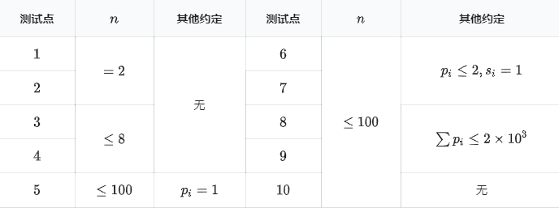

九条可怜是一个贪玩的女孩子。
这天，她和她的好朋友法海哥哥去玩密室逃脱。在他们面前的是 $n$ 个开关，开始每个开关都是关闭的状态。要通过这关，必须要让开关达到指定的状态。目标状态由一个长度为 $n$ 的 $01$ 数组 $s$ 给出，$s_i = 0$ 表示第 $i$ 个开关在最后需要是关着的，$s_i = 1$ 表示第 $i$ 个开关在最后需要被打开。
然而作为闯关者，可怜和法海并不知道 $s$。因此他们决定采用一个比较稳妥的方法：瞎按。他们根据开关的外形、位置，通过一些玄学的方法给每一个开关赋予了一个值 $p_i(p_i > 0)$。每一次，他们会以正比于 $p_i$ 的概率（第 $i$ 个开关被选中的概率是 $\dfrac{p_i}{\sum_{j=1}^n p_j}$）选择并按下一个开关。开关被按下后，状态会被反转，即开变关，关变开。注意，每一轮的选择都是完全独立的。
在按开关的过程中，一旦当前开关的状态达到了 $s$，那么可怜和法海面前的门就会打开，他们会马上停止按开关的过程并前往下一关。作为一名欧皇，可怜在按了 $\sum_{i=1}^n s_i$ 次后，就打开了大门。为了感受一下自己的运气是多么的好，可怜想要让你帮她计算一下，用这种随机按的方式，期望需要按多少次开关才能通过这一关。
第一行输入一个整数 $n$，表示开关的数量。
第二行输入 $n$ 个整数 $s_i(s_i \in \{0, 1\})$，表示开关的目标状态。第三行同样输入 $n$ 个整数 $p_i$，表示每个开关的权值。
输出一行一个整数，表示答案对 $998244353$ 取模后的值。即如果答案的最简分数表示为 $\frac{x}{y}\ (x \ge 0, y \ge 1, \gcd(x, y) = 1)$，你需要输出 $x \times y^{−1} \bmod 998244353$。
2 1 1 1 1
4
8 1 1 0 0 1 1 0 0 1 2 3 4 5 6 7 8
858924815
【样例 1 解释】
前两次按开关，有 $\frac{1}{2}$ 的概率达到 $s$，有 $\frac{1}{2}$ 的概率回到原状。因此期望的按开关数量为：
$\sum_{i=1}^{+\infty} 2i\times \left( \frac{1}{2}\right) ^i = 4$
【数据范围与提示】

对于 $100\%$ 的测试数据，保证 $n\ge 1,\sum_{i=1}^n p_i\le 5\times 10^4,p_i\ge 1$。
 Comet OJ
Comet OJ